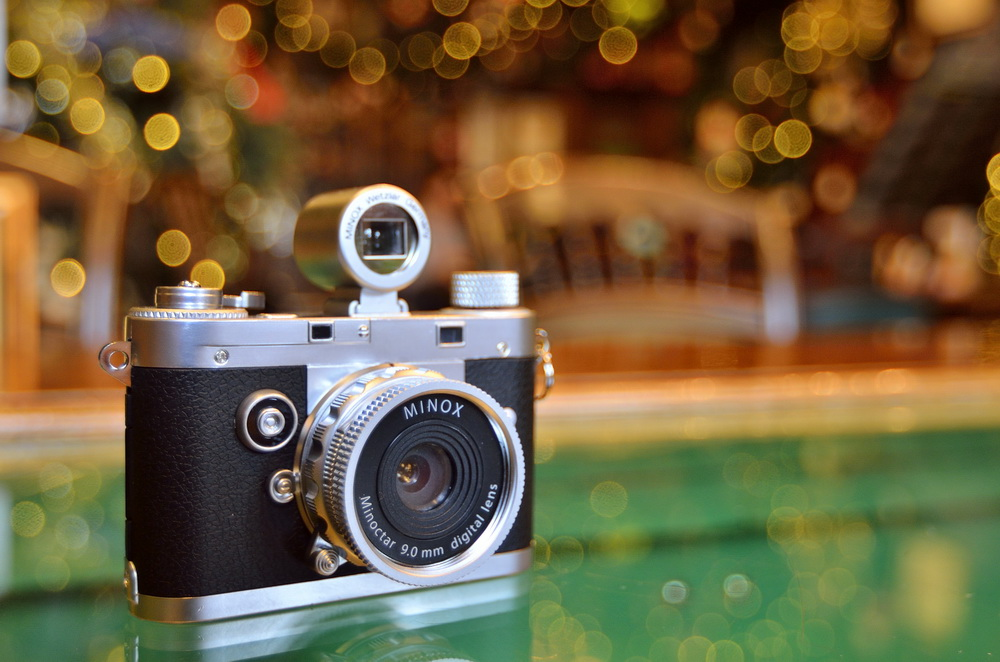

История фотографии
Фотогра́фия — технология записи изображения путём регистрации оптических излучений с помощью светочувствительного фотоматериала или полупроводникового преобразователя. В отличие от некоторых других языков, в русском слово «фотография» используется только применительно к статичным изображениям. В то же время в профессиональном кинематографе этот термин обозначает изобразительное решение фильма, создаваемое кинооператором. Фотографиями также называются конечные отпечатки фотографического изображения, изготовленные на фотобумаге химическим способом или принтером.
На технологиях фотографии основано фотоискусство, которое считается одним из видов изобразительного искусства и занимает ключевое место в современной массовой культуре. Первое устойчивое фотографическое изображение было создано в 1822 году французским изобретателем Жозефом Нисефором Ньепсом, но оно не сохранилось до наших дней. Датой изобретения технологии по решению IX Международного конгресса научной и прикладной фотографии считается 7 января 1839 года, когда Франсуа Араго сделал доклад о дагеротипии на заседании Французской академии наук.
Человек, осуществляющий фотосъёмку, называется фотографом. В большинстве случаев он же выполняет все остальные стадии создания фотоизображения, однако часто техническая часть работы выполняется фотолаборантами, ретушёрами, фоторедакторами и представителями других профессий. В профессиональной студийной фотографии некоторые обязанности фотограф перепоручает своим ассистентам.
История автомобилей

Первые известные чертежи автомобиля (с пружинным приводом) принадлежат Леонардо да Винчи (стр. 812R Codex Atlanticus), однако ни действующего экземпляра, ни сведений о его существовании до наших дней не дошло. В 2004 году эксперты Музея истории науки из Флоренции смогли восстановить по чертежам этот автомобиль, доказав тем самым правильность идеи Леонардо. В эпоху Возрождения и позже в ряде европейских стран «самодвижущиеся» тележки и экипажи с пружинным двигателем строились в единичных количествах для участия в маскарадах и парадах.
В 1769 году французский изобретатель Кюньо испытал первый образец машины с паровым двигателем, известный как «малая телега Кюньо», а в 1770 году — «большую телегу Кюньо». Сам изобретатель назвал её «Огненная телега» — она предназначалась для буксировки артиллерийских орудий.
«Тележку Кюньо» считают предшественницей не только автомобиля, но и паровоза, поскольку она приводилась в движение силой пара. В XIX веке дилижансы на паровой тяге и рутьеры (паровые тягачи, то есть безрельсовые паровозы) для обычных дорог строились в Англии, Франции и применялись в ряде европейских стран, включая Россию, однако они были тяжёлыми, прожорливыми и неудобными, поэтому широкого распространения не получили.